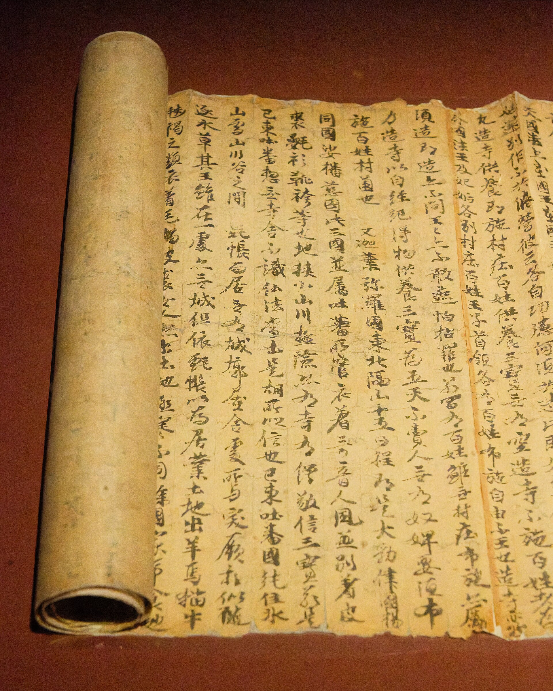
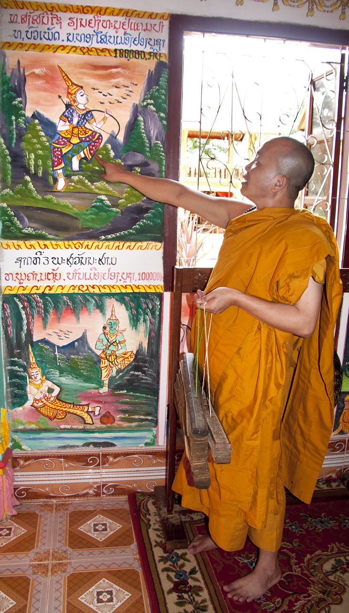

敦煌写本经卷（图源 Wikimedia Commons，公有领域）
关于这份谱曲（先读）
本谱以《佛说四十二章经》（后汉迦叶摩腾、竺法兰共译，汉地第一部汉译佛典）为蓝本，依四十二章分章讽诵。经文短峻切要，旋律取平实下行，句末落宫音，末后两章转高八度，显质朴恳切。
简谱中无点数字＝中音，数字上方虚点＝高八度。每字一音，句末字拖长。注音依通行读音，诵持请以师承为准。

僧人手捧写本经卷（图源 Wikimedia Commons，CC BY-SA 4.0）
简谱图例：
宫 1 · 商 2 · 角 3 · 徵 5 · 羽 6 ＝ C 大调五声音阶；
5 表示高八度（数字上方虚点）。每字一音，句末字拖长。
[就绪] 点「▶ 播放」开始讽诵（进度条可点击跳转）